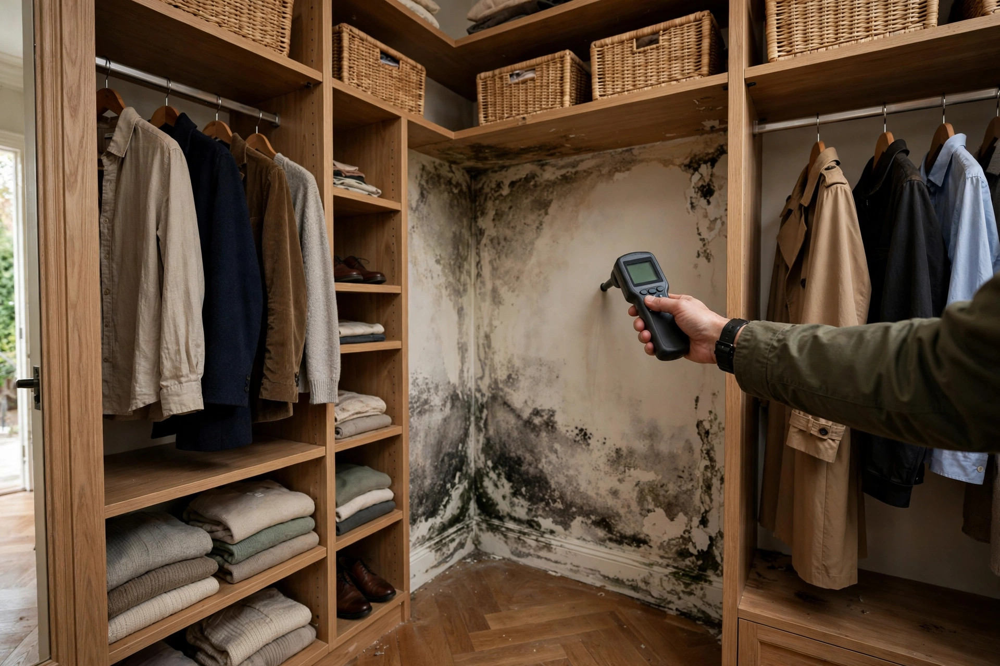

Closet Mold Removal in Eagle, ID
Closets are mold's favorite hiding spot: dark, still air, clothes packed tight against cold exterior walls. That musty smell on your jackets isn't normal — it's a colony telling you where it lives.

How closet mold gets removed
Empty and assess
Everything comes out. We check which items are salvageable (most hard goods are; porous fabrics near heavy growth may not be) and map how far the growth extends.
Remove affected material
Moldy drywall sections get cut out. Shelving and trim are either cleaned or replaced depending on the material and extent.
Treat and dry
Remaining surfaces get antimicrobial treatment. The wall cavity dries fully — verified with a meter, not a guess.
Rebuild smarter
New drywall goes up with attention to the cause: better insulation, a louvered door for airflow, or a small vent. The rebuild prevents the repeat.
A homeowner in Legacy opens their primary walk-in closet and the wool coats smell damp. The back wall — shared with the home's north exterior — shows dark spotting behind the shoe racks. The cause: missing insulation in that wall section lets the drywall run cold all winter, condensing moisture night after night. Removal takes a day; the insulation fix takes another. The coats air out fine.
Why closets grow mold
It's physics, not housekeeping. Three conditions converge in almost every closet.
Cold walls meet warm air
Closets on exterior walls — especially north-facing ones — have the coldest wall surface in the room. Warm indoor air hits that cold drywall, and moisture condenses. Every winter, the same physics repeats.
Zero airflow
Packed clothes, closed doors, no vents. Moisture that would evaporate in an open room just sits. Walk-in closets in Eagle's larger homes are actually worse — more wall area, more stored fabric absorbing humidity.
Keeping closets dry
- Leave closet doors ajar when possible — even a few inches of airflow changes everything.
- Don't pack clothes tight against exterior walls; leave a gap for air circulation.
- Consider louvered or vented closet doors if mustiness recurs.
- Run a small dehumidifier in large walk-ins during winter months.
Sources: EPA — Mold & Moisture
Straight answers
Why does mold keep coming back in my closet?
Because the cause hasn't changed. Closet mold is almost always condensation on a cold wall or trapped humidity — cleaning the surface without fixing the temperature or airflow issue guarantees a repeat. Call (321) 985-3339 and we'll find the actual driver.
Can I save clothes that smell musty?
Usually yes. Washable fabrics go through a hot wash with vinegar or borax added. Leather and wool may need professional cleaning. Anything with visible mold growing into the fibers should go — it's not worth the risk.
Is closet mold a sign of a bigger problem?
Sometimes. An isolated closet with a cold exterior wall is often just that closet. But if multiple closets or rooms show growth, there's likely a whole-house humidity or envelope issue worth investigating.
How much does closet mold removal cost?
A single reach-in closet: typically a few hundred dollars. A large walk-in with drywall replacement: low four figures. The insulation or ventilation fix that prevents recurrence is usually the smaller part of the bill.
Should I run a dehumidifier in my closet?
For walk-ins in winter, it helps. But it's treating the symptom — the real fix is addressing why that wall runs cold or why humidity pools there. A dehumidifier plus the underlying fix is the winning combination.
What we typically find in Eagle closets
Primary walk-ins
The biggest closets have the most exterior wall area and the most stored fabric. Master bedroom closets on north walls are the number-one location.
Hall linen closets
Small, rarely opened, often against a bathroom wall. A slow plumbing seep from the neighboring bathroom feeds them silently.
Under-stair closets
Dead air space under stairs with no ventilation. Anything damp stored here stays damp, and the drywall never fully dries between seasons.
Musty closet driving you crazy?
Call and tell us which closet and what you're seeing. We'll give you a clear picture of what it takes to fix.